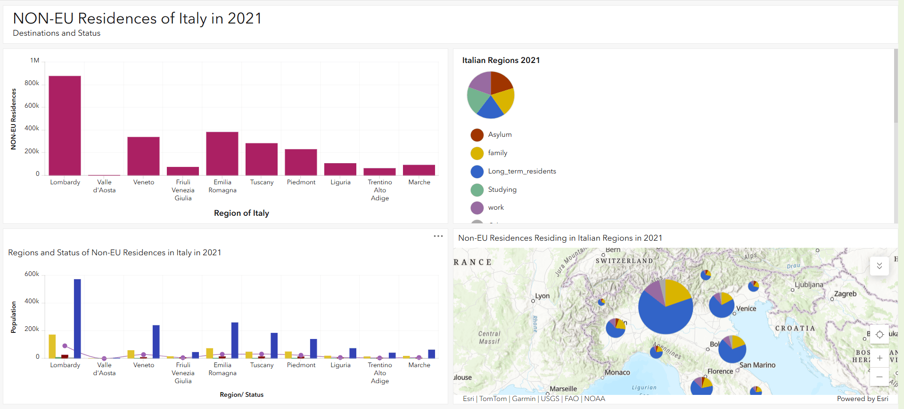

The Narrative
As a researcher and educator with a 12-year background in pedagogical practice, I bridge digital humanities methodology with the study of science cultures. Using spatial and discursive mapping, I explore how researchers and communities orient their practices within the environmental and political "poly-crisis." My work investigates how expertise is negotiated and survives the transition from informal, radical spaces to formal institutional structures.
Research & Digital Works
From BBS to Blackboard: The Pedagogy of the Exploit
STS Corpus Linguistics Voyant ToolsA longitudinal analysis of Phrack Magazine evaluating technical knowledge transfer. By mapping hacker rhetoric as a structured instructional system, this study defines how technical identity is negotiated within decentralized, high-stakes networks.
The Museum of Halal Tourism
Digital Pedagogy STS Front-End DevAn interactive digital archive investigating the sociotechnical infrastructure of religious mobility. This exhibit performs an "infrastructural inversion" of religious knowledge. Awarded 30/30 for technical execution and theoretical depth.
Geospatial Analysis: Non-EU Residences in Italy
ArcGIS Spatial MappingAn interactive dashboard visualizing the demographic distribution and legal status of non-EU residents in Italy, observing the intersections of political boundaries and migrant mobility.

NAGPRA as a Cultural Encounter
Cultural Heritage Policy AnalysisAn analytical review of Kathleen S. Fine-Dare's Grave Injustice, examining how legal frameworks intersect with indigenous rights and historical justice.
Shapes of Educational Gender Discrimination in Iran
STS Gender Studies Education PolicyA critical analysis examining systemic educational gender discrimination in Iran. This research investigates disparities in educational access, bias within school textbooks, and sociocultural barriers imposed by traditional and political structures.
Research Mentors & References
Full letters of recommendation and direct contact details are available upon request.